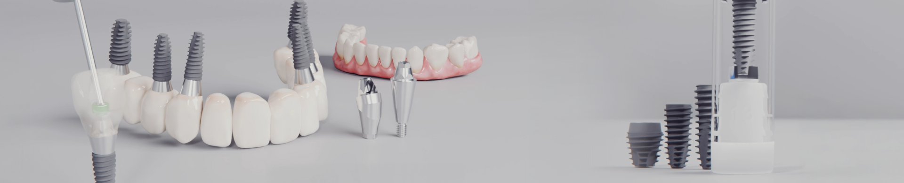
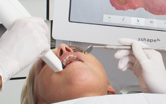
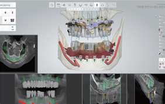
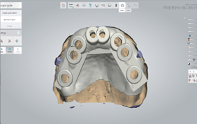
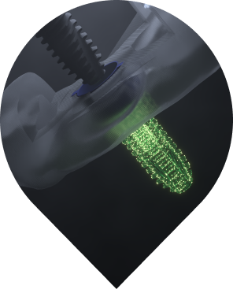

Dikişsiz Cerrahi
Diş etini boydan boya kesmeye gerek kalmadan, sadece implantın yerleşeceği noktada küçük bir yuva açılır. Kanama ve şişlik minimuma iner.


Dikişsiz ve hatasız implant deneyimi. Ağrısız, hızlı ve güvenli gülüşler için tam dijital cerrahi planlama ve kılavuz sistemi.
 Nedir?
Nedir?DIOnavi, implant yerleştirme sürecini dijital ortamda planlayan ve cerrahi operasyonu kişiye özel hazırlanan rehberler (guide) aracılığıyla gerçekleştiren gelişmiş bir navigasyon sistemidir.
Klasik yöntemlerin aksine, operasyon öncesinde bilgisayar üzerinde yapılan simülasyon sayesinde hata payı sıfıra indirilir.
 hakkında bilgi alın
hakkında bilgi alınUygulama süreçleri ve eğitim talepleriniz için bizimle iletişime geçebilirsiniz.
?Diş etini boydan boya kesmeye gerek kalmadan, sadece implantın yerleşeceği noktada küçük bir yuva açılır. Kanama ve şişlik minimuma iner.
3D tomografi ve ağız içi tarama verileri birleştirilerek implant konumu milimetrik olarak belirlenir. Sinirlere zarar verme riski ortadan kalkar.
Geleneksel yöntemde haftalar süren iyileşme süreci, dikişsiz yöntem sayesinde çok daha hızlı tamamlanır. Sosyal hayatınıza hemen dönebilirsiniz.
Dijital planlama sayesinde, implantın üzerine takılacak geçici dişler operasyon anında hazır olabilir.

%100 dijital planlama ile
sıfır hata payı

Hastanın ağız içi 3D tarayıcılar (Intraoral Scanner) ile taranır ve CBCT (Tomografi) görüntüleri alınır.

Hekim, dijital veriler üzerinde implantın en ideal açısını ve derinliğini simüle eder.

3D yazıcılar ile hastanın ağız yapısına tam uyumlu bir cerrahi rehber üretilir.

Rehber ağza yerleştirilir ve implantlar planlanan noktalardan tek seferde, hatasız bir şekilde yerleştirilir.



kimlere uygun?Ağrıdan çekinen hastaların en rahat şekilde tedavi olmasını sağlar.
Şeker, tansiyon vb. hastalıklarda hızlı iyileşme kritik önemdedir.
Kısa sürede çözüm arayanlar için ideal; operasyon süresi önemli ölçüde kısalır.
En doğru protez açısını arayan hastalarda en yüksek hassasiyeti sunar.